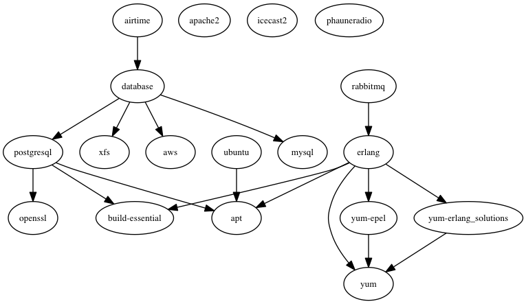

Airtime Appliance Deployment
This is an example of an Airtime Chef automated deployment, that we use internally for easily testing new releases and features.
This is NOT meant for production use.
It uses Vagrant, Opscode Chef (solo) 11.x Berkshelf.
Software includes apache2, php5, icecast2, postgresql, airtime.
Prerequisites
- Virtualbox or (VMware)[http://www.vmware.com/] or anything that works for you with Vagrant.
- Vagrant '>= 1.5.2' and a Ubuntu Box (there's an excellent Vagrant VMware plugin)
- a working ruby dev environment with bundler: try homebrew for a good start on OSX
- some Vagrant plugins (unfortunately, as of lately, Vagrant-Bindle isn't maintained anymore)
Install
Vagrant Environment
Unfortunately, as of lately, Vagrant-Bindle isn't maintained anymore.
We'll use Vagrant-Cachier
$ vagrant plugin install vagrant-cachier
and Vagrant-Omnibus to ensure the desired version of Chef is installed.
$ vagrant plugin install vagrant-omnibus
$ vagrant plugin install vagrant-berkshelf --plugin-version 2.0.1
Chef Development Kit
If you need to hack on cookbooks, you might need Chef binaries, tools and plugins. Go take a look at Chef-DK, the Chef Development Kit. It contains everything you neeed.
Berkshelf
To manage cookbook dependencies, install Berkshelf:
$ bundle install --binstubs
$ ./bin/berks vendor cookbooks
Or if you use the above Chef-DK, just
$ berks vendor cookbooks
Here's a dependency graph:

Launch
This is an example to launch the default "airtime" Vagrant profile.
- VMware Fusion
$ vagrant up airtime --provider=vmware_fusion
- VirtualBox
$ vagrant up airtime --provider=virtualbox
Web Access
Access your new Airtime installation:
- Airtime web GUI: http://localhost:8080
- Icecast stream: http://localhost:8000/airtime_128
SSH Access
If needed, you can access the box by SSH.
$ vagrant ssh
Optional Configuration Steps
Timezone
Airtime timezone is optionnaly to be configured
Chef Roles dependencies
(updated by issuing knife role spaghetti)